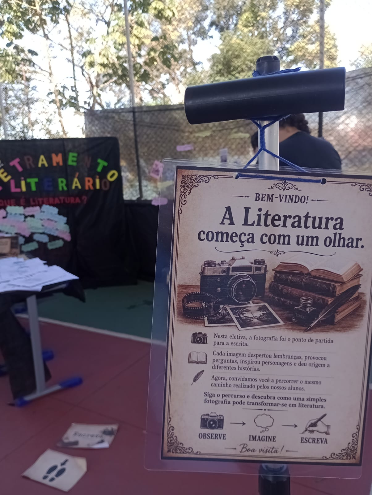
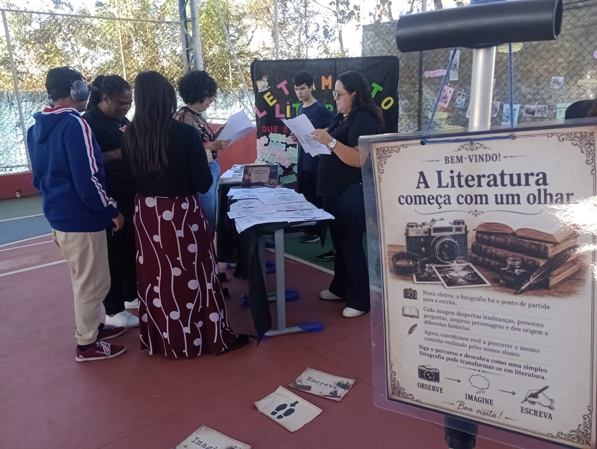
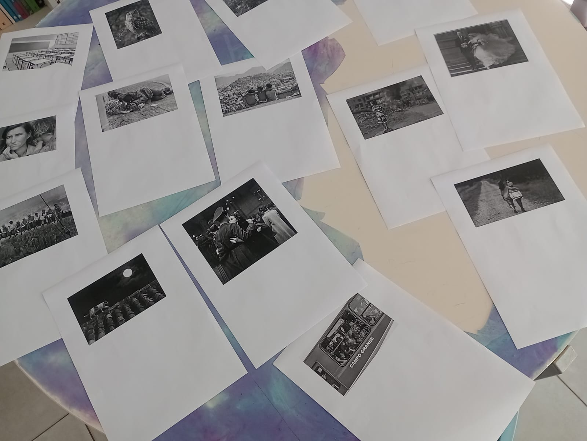
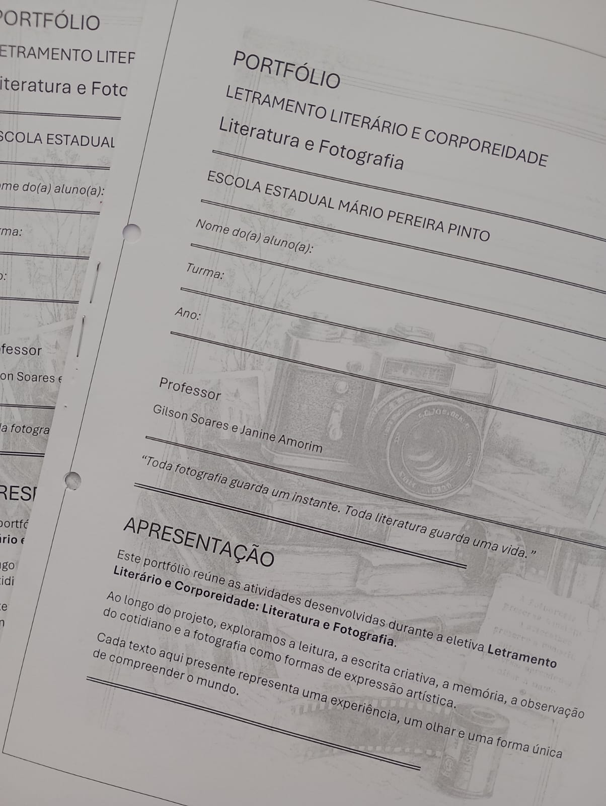
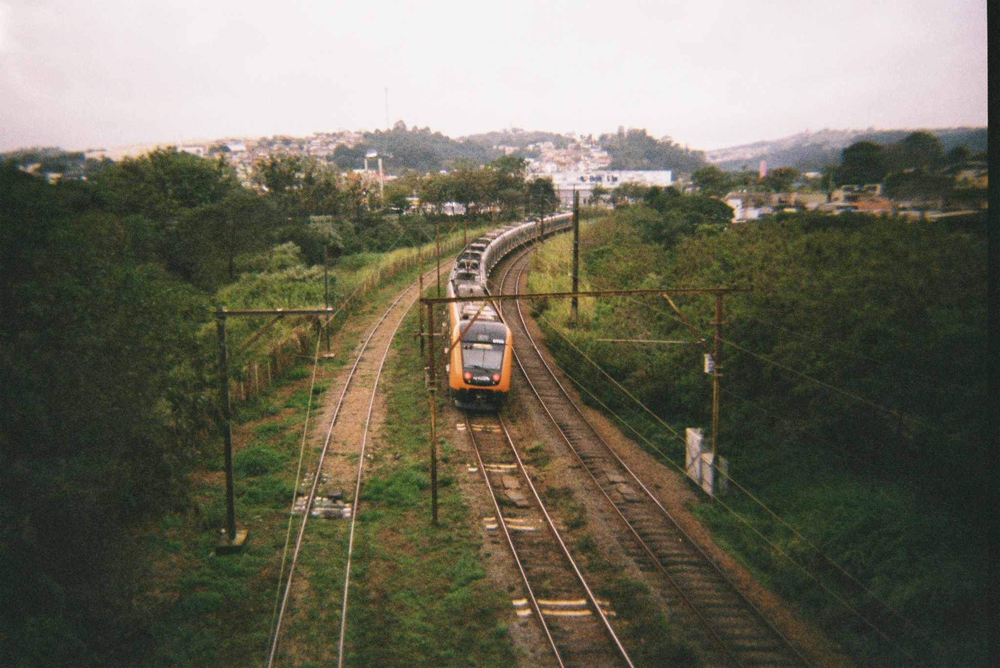
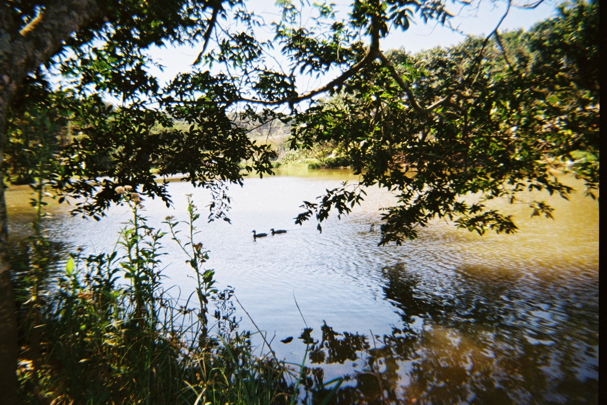
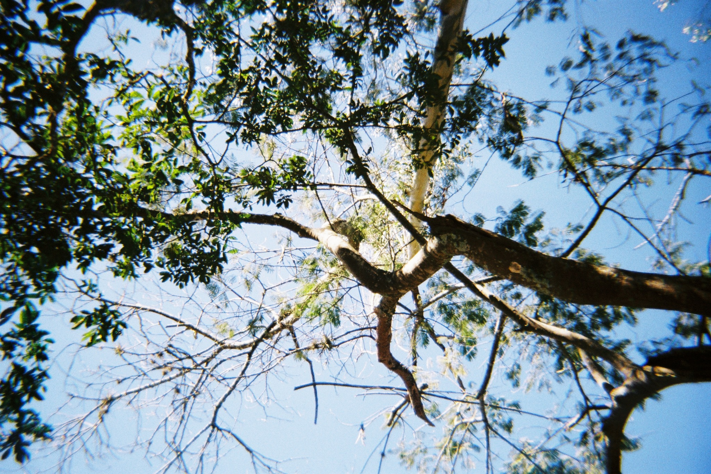
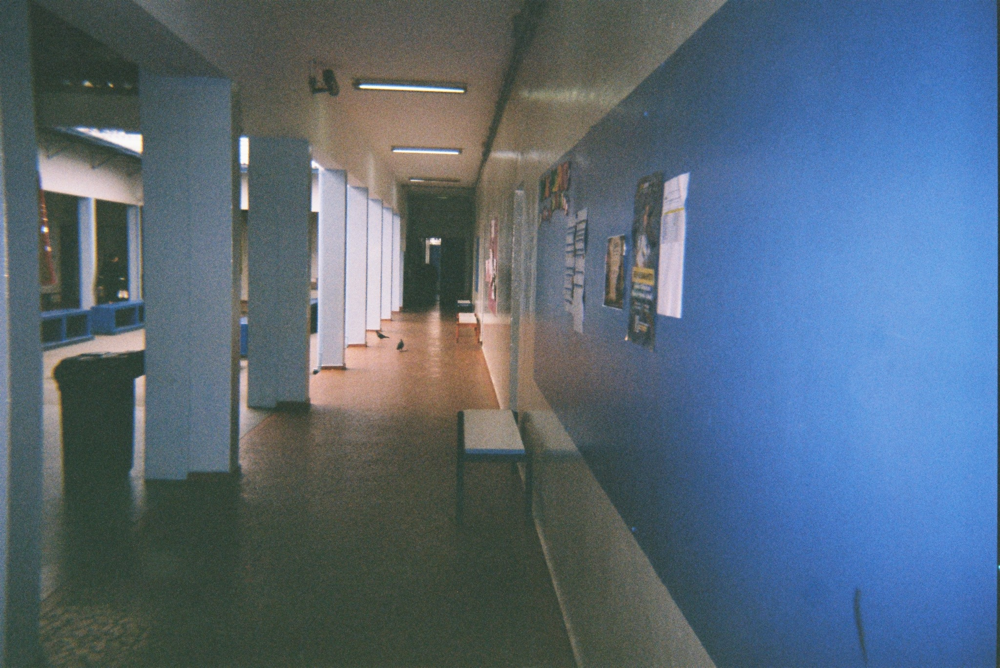

Ler
A leitura como encontro, descoberta, repertório e experiência de mundo.
Literatura • Fotografia • Educação
Há histórias escondidas no cotidiano.
Um projeto que nasce do encontro entre leitura, escrita, memória e fotografia — um convite para observar o mundo com mais atenção e transformá-lo em palavra.
A leitura como encontro, descoberta, repertório e experiência de mundo.
A escrita como gesto de autoria, memória, invenção e expressão.
A fotografia e a observação como formas de perceber o que costuma passar despercebido.
O projeto

Olhares que Escrevem é um projeto de leitura, escrita criativa e fotografia que aproxima literatura e cotidiano. A proposta parte da ideia de que escrever também é aprender a observar: pessoas, lugares, gestos, memórias, silêncios e pequenas cenas da vida.
Em oficinas, projetos escolares e ações culturais, os participantes são convidados a ler autores diversos, registrar imagens, produzir textos e construir uma voz própria. O processo valoriza a experiência, a escuta, a reescrita e a formação do leitor literário.
Oficinas e projetos
Encontros de criação literária com leitura guiada, memória afetiva, construção de cenas, personagens, cenários e reescrita.
O olhar fotográfico como disparador de narrativas, crônicas e reflexões sobre identidade, território e memória.
Ações em escolas e bibliotecas voltadas à formação de leitores, circulação de livros e fortalecimento da leitura como prática social.



Textos
Memória, imagem e identidade em uma reflexão sobre aquilo que permanece.
Uma madrugada fria, um ônibus estranho e o cotidiano visto por uma fresta inquietante.
Notas sobre leitura atenta, escolhas de linguagem e formação do olhar de quem escreve.
Imagens do olhar




Sobre
Professor de Língua Portuguesa e Literatura, escritor e mediador de leitura. Desenvolve projetos que aproximam literatura, escrita criativa, fotografia e formação de leitores.
É autor do livro de contos Os Prisioneiros e idealizador do Olhares que Escrevem, projeto voltado à educação do olhar e à criação literária em contextos escolares e culturais.
Contato
Para oficinas, parcerias com escolas e bibliotecas, eventos ou convites, use o canal abaixo.
Enviar e-mailgilson.souza00751@gmail.com